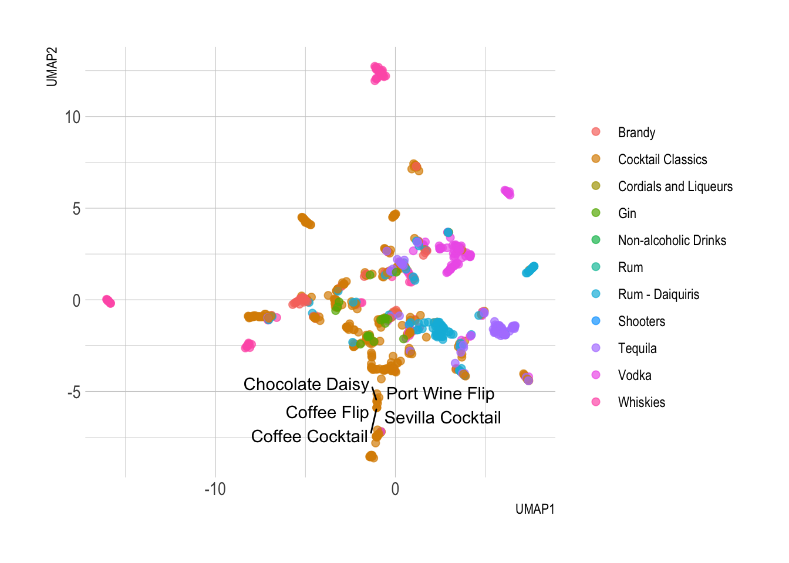

Working with TidyModels to generate PCA and UMAP for Cocktail recipes. Using these recipes extrapolating the relation of a cocktail to each other.
TidyModels
PCA
UMAP
Machine Learning
Dimension Reduction
Author
Karat Sidhu
Published
May 22, 2022
TidyModels - PCA & UMAP
Dimensionality Reduction analysis with Tidymodels
Note: This is part 2 of the tidymodels practise. A few of these RMarkdown files were generated on a date different to the publishing date.
Principal Component analysis (and UMAP to a lesser extent) have been extensively used in Biological Sciences and specifically in Omics. Compared to other components of the TidyVerse, I am fairly comfortable using and running the PCA test on a set of data. However, I typically use either the base R (prcom) or PCA Tools1 because generating a series of plots using those packages is fairly straightforward2.
Cocktail Recipes Dataset
The dataset used is from the Tidytuesday data, where different cocktails and the components used for their recipes is provided.
Reducing dimensions in such a case would help in finding out which cocktail is closely related to the other in terms of their components.
Rows: 3643 Columns: 6
── Column specification ────────────────────────────────────────────────────────
Delimiter: ","
chr (4): name, category, ingredient, measure
dbl (2): row_id, ingredient_number
ℹ Use `spec()` to retrieve the full column specification for this data.
ℹ Specify the column types or set `show_col_types = FALSE` to quiet this message.
Data Cleaning and Exploratory Data Analysis
Preliminary look at the data
boston_cocktails
# A tibble: 3,643 × 6
name category row_id ingredient_numb… ingredient measure
<chr> <chr> <dbl> <dbl> <chr> <chr>
1 Gauguin Cocktail Classics 1 1 Light Rum 2 oz
2 Gauguin Cocktail Classics 1 2 Passion F… 1 oz
3 Gauguin Cocktail Classics 1 3 Lemon Jui… 1 oz
4 Gauguin Cocktail Classics 1 4 Lime Juice 1 oz
5 Fort Lauderdale Cocktail Classics 2 1 Light Rum 1 1/2 …
6 Fort Lauderdale Cocktail Classics 2 2 Sweet Ver… 1/2 oz
7 Fort Lauderdale Cocktail Classics 2 3 Juice of … 1/4 oz
8 Fort Lauderdale Cocktail Classics 2 4 Juice of … 1/4 oz
9 Apple Pie Cordials and Liqu… 3 1 Apple sch… 3 oz
10 Apple Pie Cordials and Liqu… 3 2 Cinnamon … 1 oz
# … with 3,633 more rows
So the PCA should be carried out for the “name” field and looking at the relation between the cocktail and the incredients, category and the measured amount of each ingredient used.
Most Common Ingredients
boston_cocktails |>count(ingredient, sort =TRUE)
# A tibble: 569 × 2
ingredient n
<chr> <int>
1 Gin 176
2 Fresh lemon juice 138
3 Simple Syrup 115
4 Vodka 114
5 Light Rum 113
6 Dry Vermouth 107
7 Fresh Lime Juice 107
8 Triple Sec 107
9 Powdered Sugar 90
10 Grenadine 85
# … with 559 more rows
A lot of cocktails look like are using Gin, Lemon Juice, Syrup and Vodka as some of the most common ingredients.
Column Cleaning and data conversion
The data isn’t very clean yet. Some ingredients, which are clearly the same are labelled slightly differently. So we need to clean and make the data usable for our analysis.
Some of the main changes needed in the ingredients:
turn all ingredients to lowercase
“-” needs to be chagned to ” ”
“lemon” to “lemon Juice”
“lime” to “lime juice”
“grapefruit” to “grapefruit juice” (same for orange)
Warning: 20 parsing failures.
row col expected actual
637 -- a number For glass
671 -- a number For glass
794 -- a number For glass
878 -- a number For glass
928 -- a number For glass
... ... ........ .........
See problems(...) for more details.
cocktails
# A tibble: 2,542 × 7
name category row_id ingredient_numb… ingredient measure measure_number
<chr> <chr> <dbl> <dbl> <chr> <chr> <dbl>
1 Gauguin Cocktai… 1 1 light rum 2 oz 2
2 Gauguin Cocktai… 1 3 lemon jui… 1 oz 1
3 Gauguin Cocktai… 1 4 lime juice 1 oz 1
4 Fort Laud… Cocktai… 2 1 light rum 1.5 oz 1.5
5 Fort Laud… Cocktai… 2 2 sweet ver… .5 oz 0.5
6 Fort Laud… Cocktai… 2 3 orange ju… .25 oz 0.25
7 Fort Laud… Cocktai… 2 4 lime juice .25 oz 0.25
8 Cuban Coc… Cocktai… 4 1 lime juice .5 oz 0.5
9 Cuban Coc… Cocktai… 4 2 powdered … .5 oz 0.5
10 Cuban Coc… Cocktai… 4 3 light rum 2 oz 2
# … with 2,532 more rows
New Dataframe with a “wide” format
We’re now close to beginning our analysis. However, the data is in long format and PCA prefers to get the data wider. So we’ll pivot_wide to make the analysis easier.
This will be the starting dataset used to run PCA (and UMAP)
Principal Component Analysis
Henceforth I will be using CMDLineTips Post3 as a reference because I’ve never done a PCA with TidyModels before.
Prepare the analysis
Recipe code
pca_rec <-recipe(~., data = cocktails_df) |># what data to useupdate_role(name, category, new_role ="id") |># name and category are identifiers not variablesstep_normalize(all_predictors()) |># normalize all other columnsstep_pca(all_predictors()) # pca for all other columns
Prep Code
pca_prep <-prep(pca_rec)pca_prep
Recipe
Inputs:
role #variables
id 2
predictor 40
Training data contained 937 data points and no missing data.
Operations:
Centering and scaling for light_rum, lemon_juice, lime_juice, sweet_vermo... [trained]
PCA extraction with light_rum, lemon_juice, lime_juice, sweet_vermou... [trained]
The prep object now doesn’t contain any output, and we need to tidy the object to read it. List object contains the PCA “results” and components on the 2nd place under “term_info” (open it in the console to see details).
Looking at the PC1, simple syrup and powdered sugar are very different from each other, therefore the cocktails must be using one or the other. They also appear to be the two biggest factors.
PC1 and PC2 main contributors
tidied_pca |>filter(component %in%paste0("PC", 1:2)) |>group_by(component) |>top_n(8, abs(value)) |>ungroup() |>mutate(terms =reorder_within(terms, abs(value), component)) |>ggplot(aes(abs(value), terms, fill = value >0)) +geom_col() +facet_wrap(~component, scales ="free_y") +scale_y_reordered() +labs(x ="Absolute value of contribution",y =NULL, fill ="Positive?" ) + hrbrthemes::theme_ipsum()
Recipe
Inputs:
role #variables
id 2
predictor 40
Training data contained 937 data points and no missing data.
Operations:
Centering and scaling for light_rum, lemon_juice, lime_juice, sweet_vermo... [trained]
UMAP embedding for light_rum, lemon_juice, lime_juice, sweet_verm... [trained]
So far, the process is exactly the same as PCA. Prep the recipe and get the “non output”-output.
Warning: ggrepel: 932 unlabeled data points (too many overlaps). Consider
increasing max.overlaps

Similarly clustering seen here, but type of cocktails seen here are different.
Conclusion
The PCA (and UMAP) using TidyModels offers a bit more customization compared to using a regular prcomp or PCA-Tools. However, it requires a bit more code and felt slightly slower in running compared to the other packages (without actually testing the time fyi)4.
Additional Reading:
Easily the best explanation of PCA on the internet: https://stats.stackexchange.com/questions/2691/making-sense-of-principal-component-analysis-eigenvectors-eigenvalues
How PCA works - interactive plots: https://setosa.io/ev/
How UMAP works: https://umap-learn.readthedocs.io/en/latest/how_umap_works.html